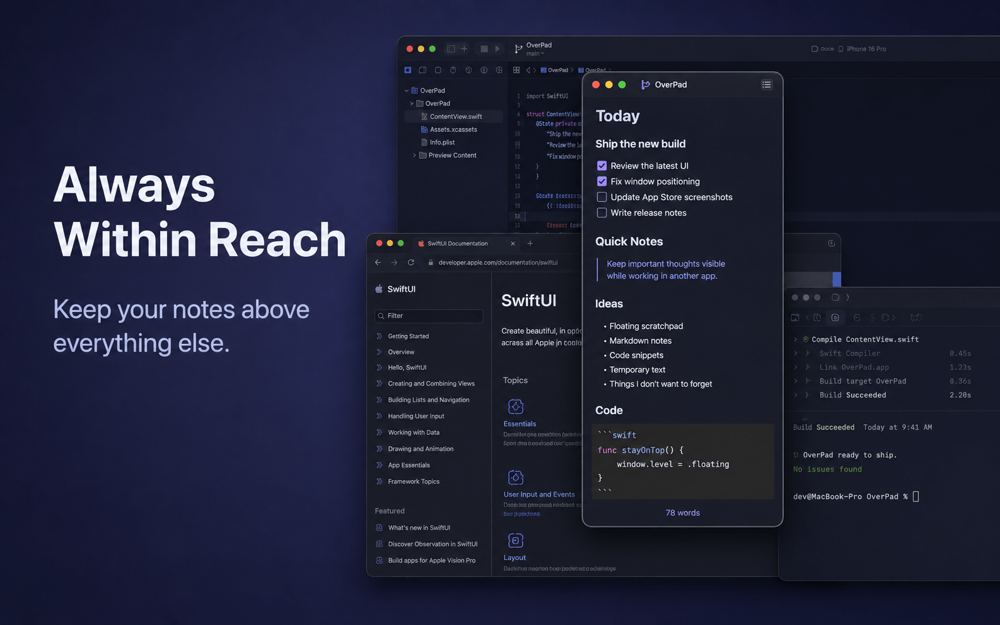
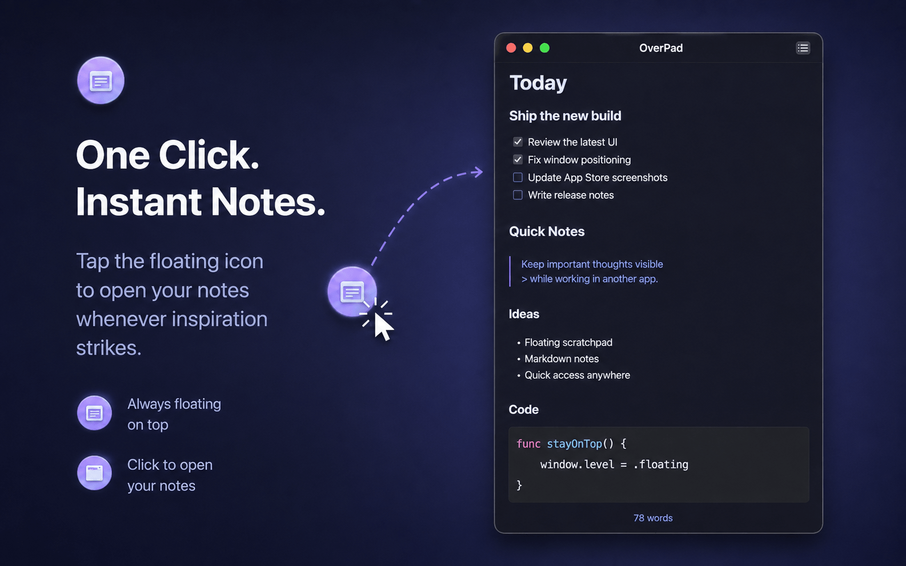
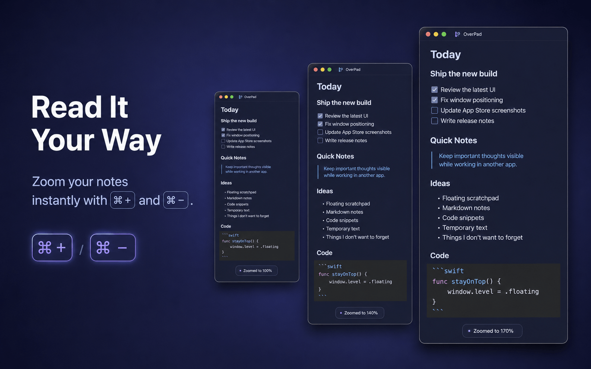
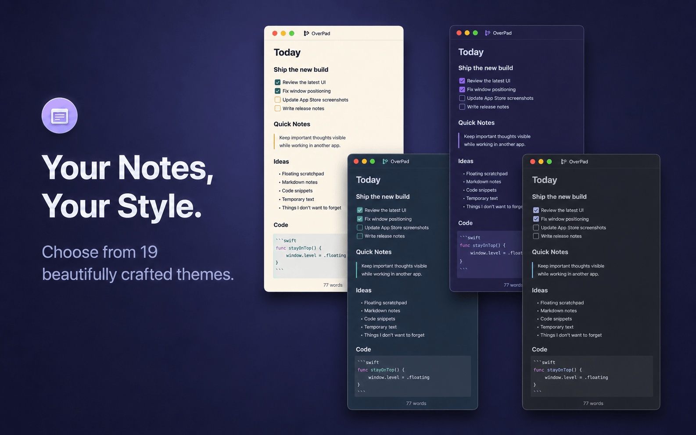

One-click access
Drag the floating orb anywhere on screen, then click it to open the editor beside your current work.
Native macOS floating scratchpad
OverPad keeps a lightweight Markdown editor one click away—above your coding, browsing, writing, and full-screen workflows.
Version 1.0 · Available for Mac only

What OverPad is
OverPad is a native macOS app for quickly capturing and organizing temporary text. It launches as a draggable 48×48 pt floating orb instead of a traditional main window. Click the orb to open the Markdown editor; close the editor to return to the unobtrusive orb without quitting the app.
It is designed for developers, writers, researchers, and anyone who needs a place for code snippets, prompts, error logs, links, checklists, meeting notes, or draft text while another app remains visible.
中文简介：OverPad 是一款 macOS 原生悬浮 Markdown 草稿本。点击常驻悬浮球即可记录和整理文字，支持多笔记、代码高亮、19 套配色、8 种界面语言与本地自动保存，适合编程、浏览、写作和整理 AI 上下文。
Core features
Drag the floating orb anywhere on screen, then click it to open the editor beside your current work.
The floating panels can join every desktop Space and are designed to assist native macOS full-screen workflows.
Create, switch, and delete multiple notes. Titles come from the first line and notes are ordered by recent use.
Edit portable Markdown source with live styling, GFM features, fenced code blocks, and syntax highlighting.
Choose a custom font, adjust the base size, and zoom from 60% to 240% using familiar Command shortcuts.
Switch between three light and sixteen dark palettes; the orb, editor, Markdown, and code colors update together.
Use English, Simplified Chinese, Traditional Chinese, Japanese, Korean, Spanish, French, or German.
Notes and key preferences are saved on your Mac and restored on relaunch. There is no manual Save button.
OverPad runs without a traditional Dock window and can temporarily collapse into the macOS menu bar.
Screenshots



Good to know
OverPad does not require an account and does not include advertising, analytics, tracking, or cloud sync. Notes and preferences are stored locally by the app.
Frequently asked questions
OverPad is a native floating Markdown scratchpad for macOS. It stays available as a draggable orb and opens into a lightweight editor for notes, code snippets, prompts, logs, and temporary text.
No. Notes and preferences are stored locally on your Mac. OverPad does not provide accounts, cloud sync, analytics, advertising, or tracking.
No. It does not generate, summarize, translate, or upload content with AI. OverPad is useful for manually preparing clean Markdown context that you can copy into the AI tool of your choice.
Yes. It supports live styling for common Markdown and GFM syntax, plus fenced code blocks with syntax highlighting for commonly used languages such as Swift, C#, JSON, JavaScript, TypeScript, Python, and Bash.
OverPad is currently available only for macOS through the Mac App Store. There is no iPhone, iPad, Windows, Android, or web version at this time.
Open a lightweight scratchpad without leaving the app, Space, or full-screen workflow already in front of you.